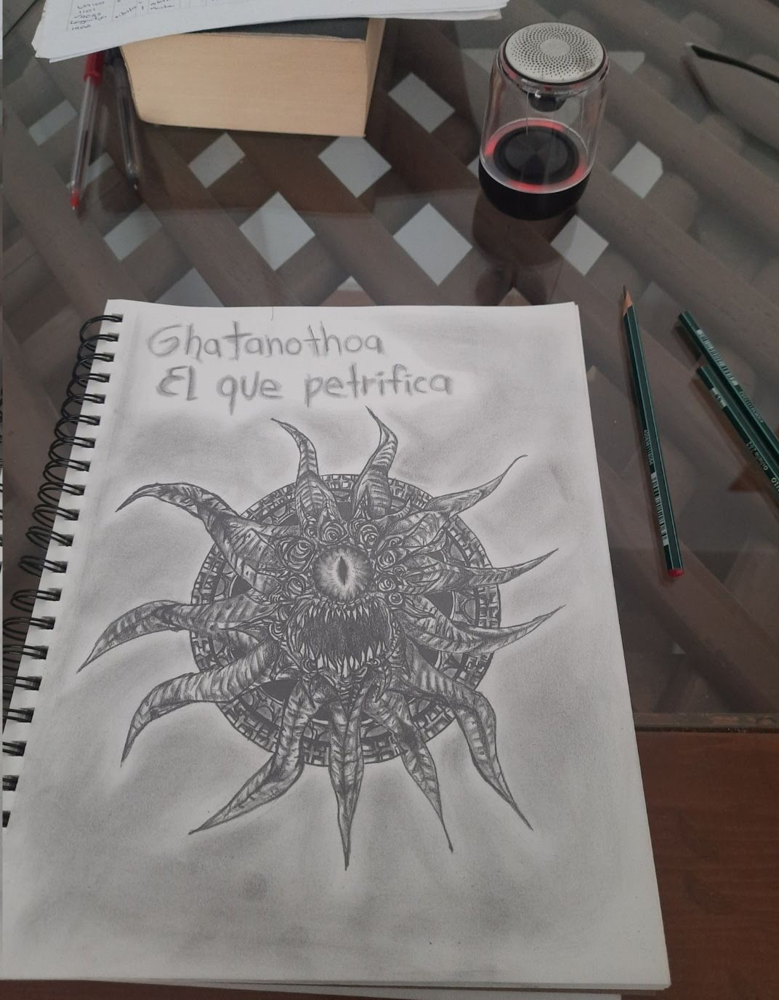
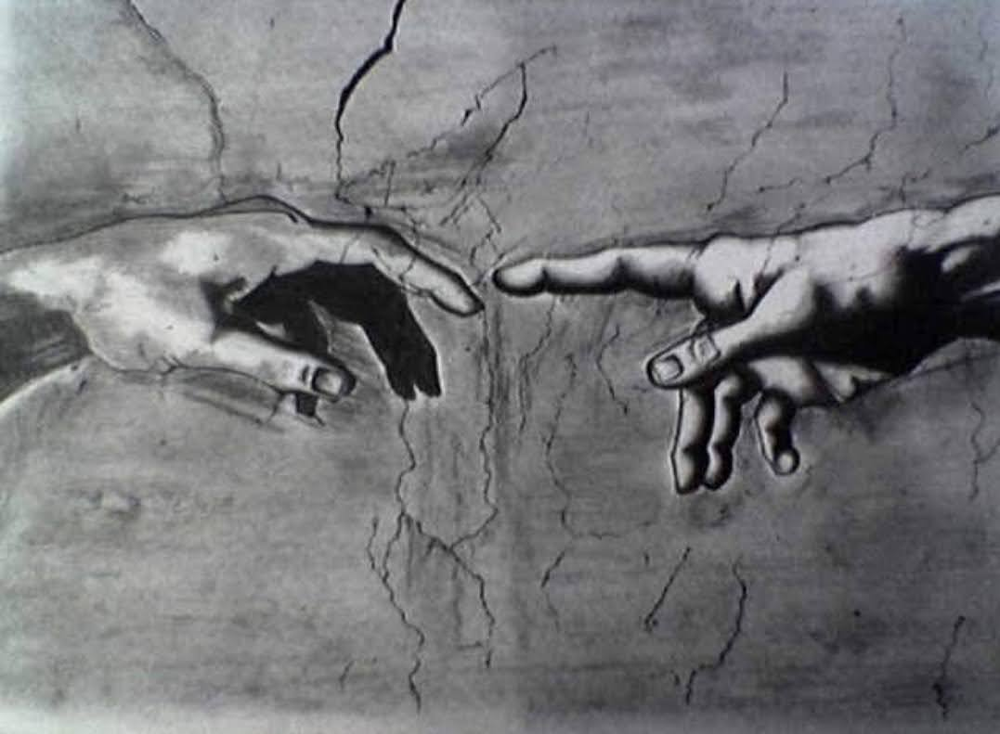
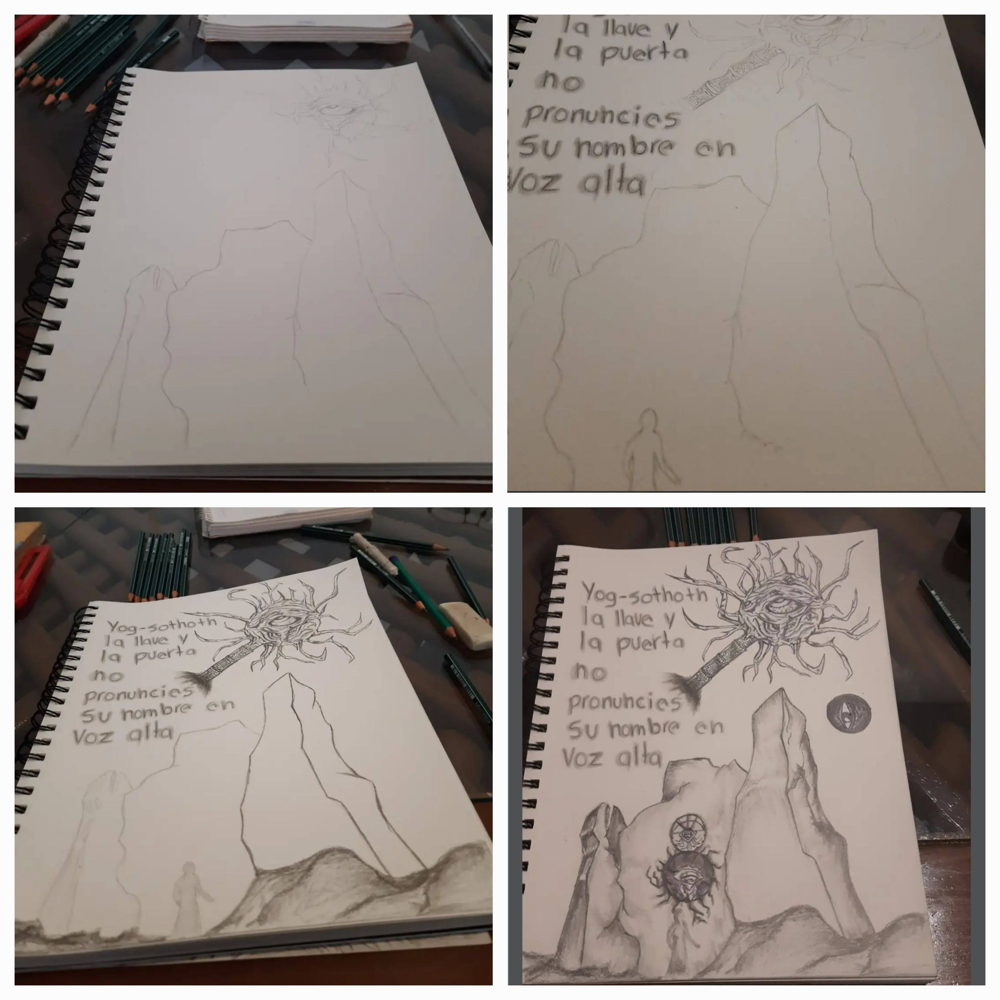
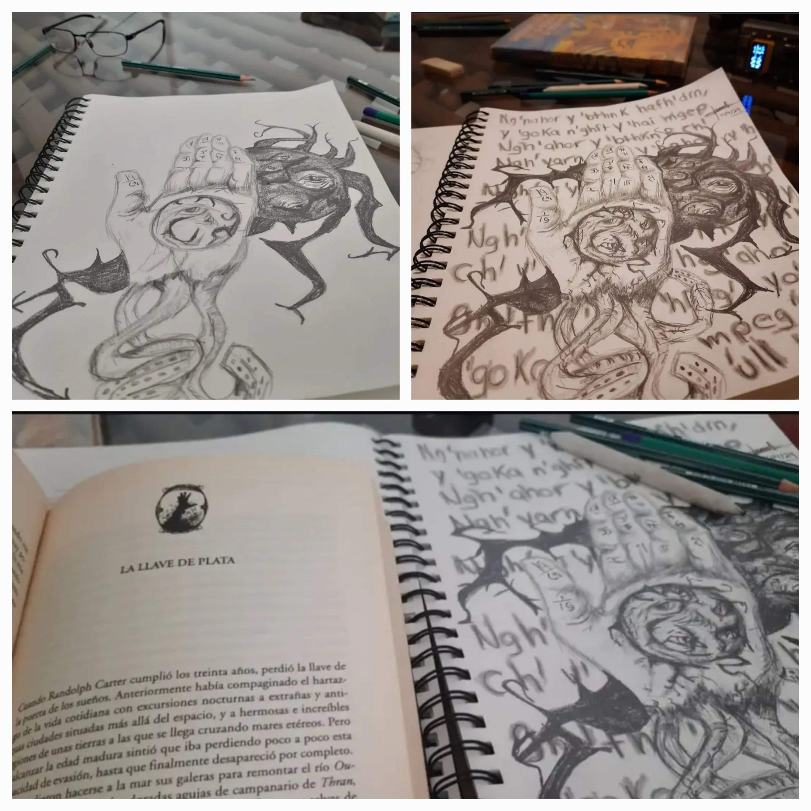
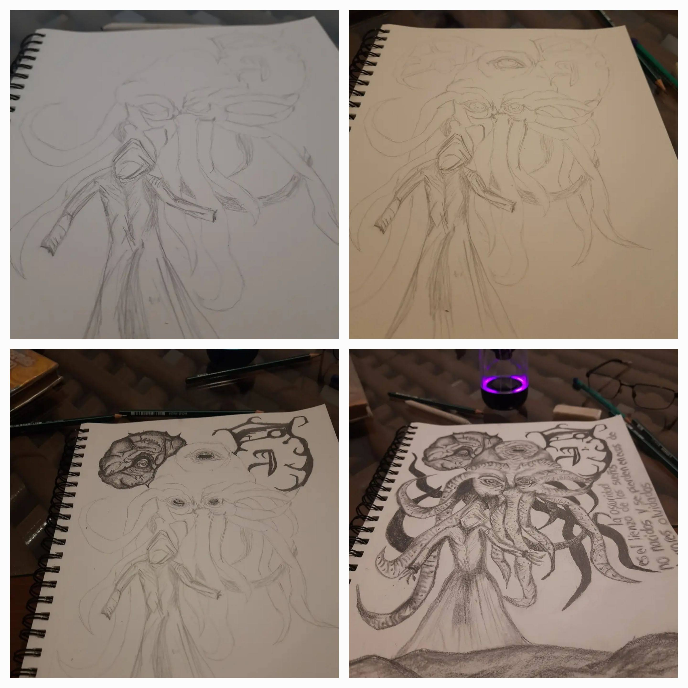
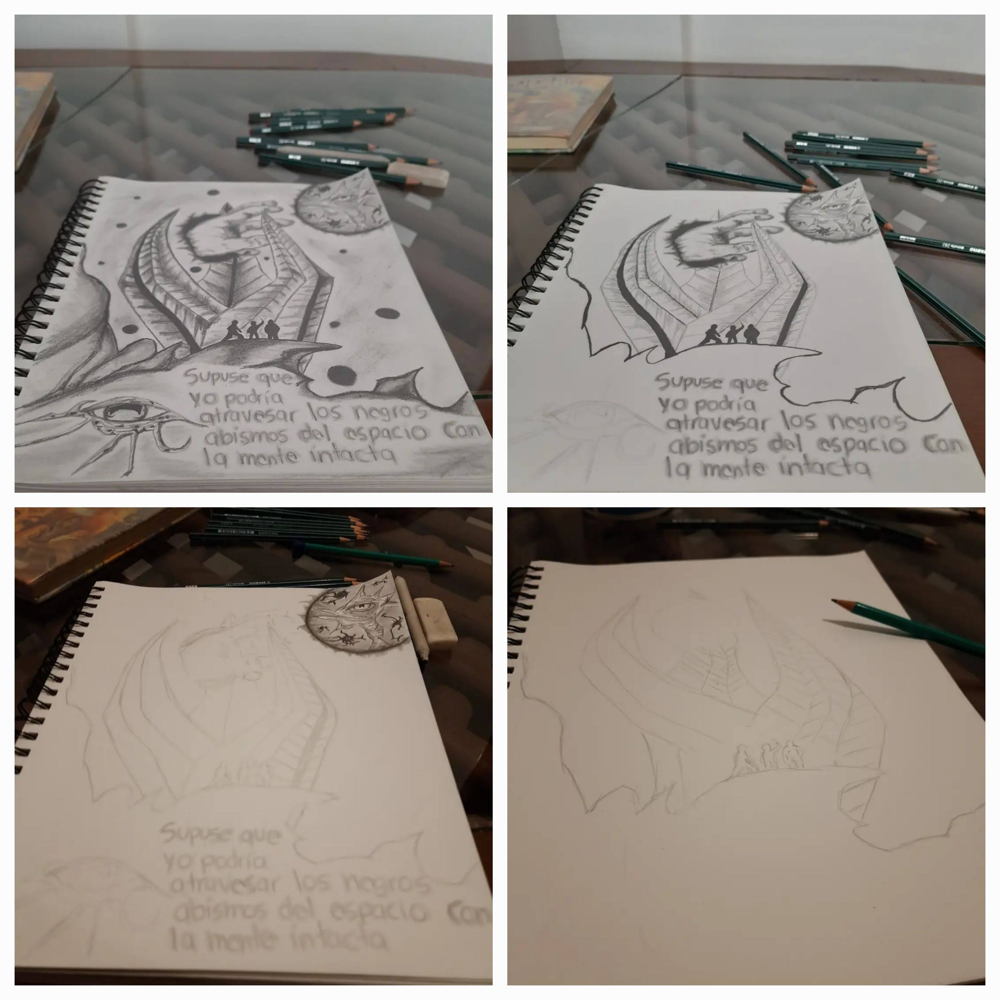
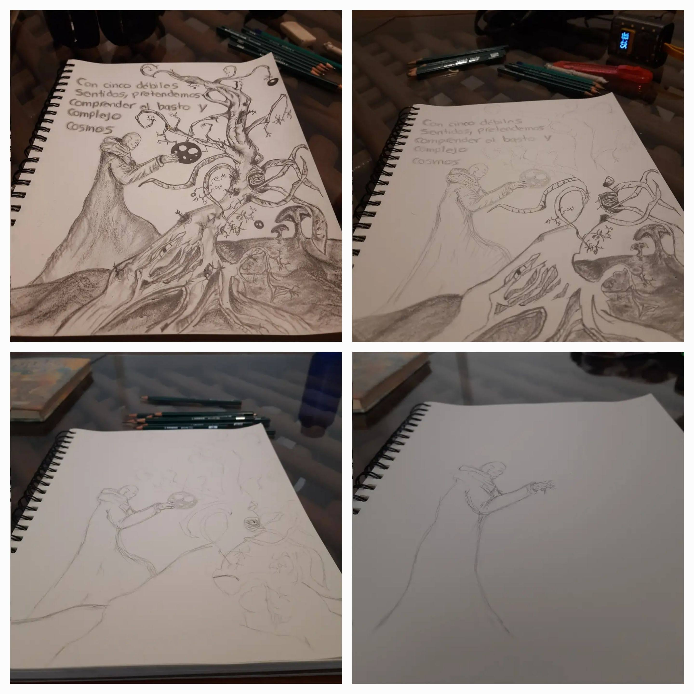
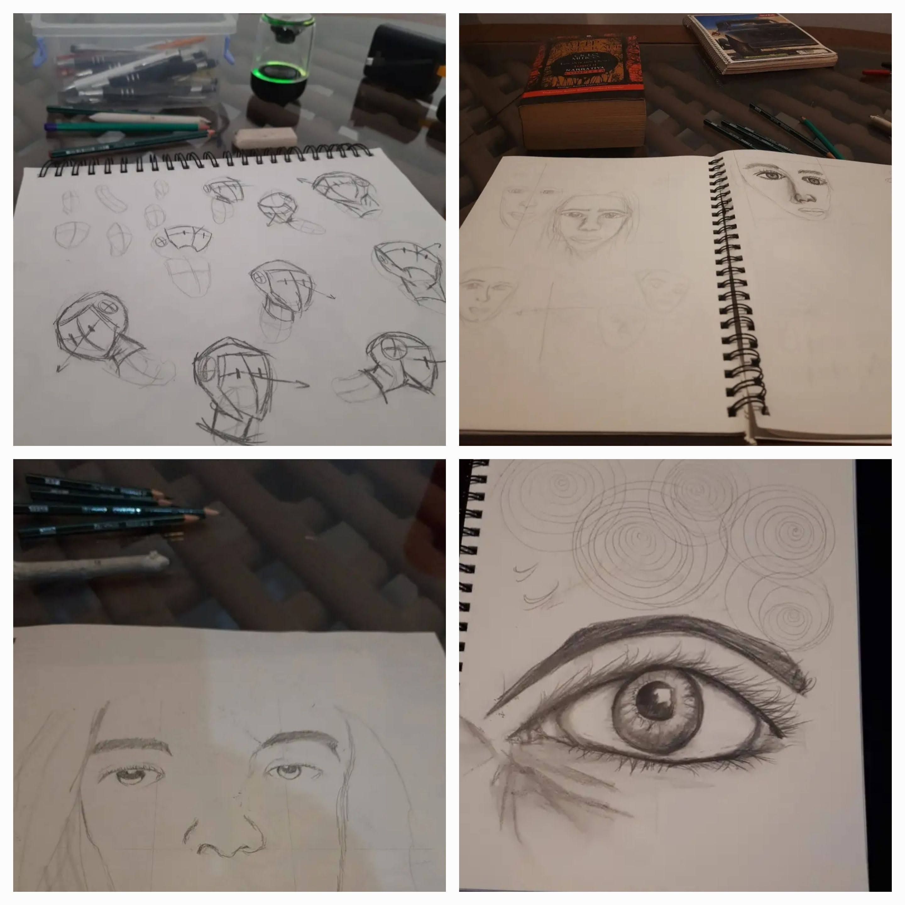

Por Antonio Córdova Carmona
Hola, soy Antonio Córdova Carmona, y aquí te muestro algunos de mis dibujos. Mi pasión por el arte oscuro y los temas de terror se refleja en cada trazo. Cada obra cuenta una historia misteriosa...








Mi arte se inspira en los misterios de la noche, las leyendas urbanas y todo aquello que despierta nuestra curiosidad por lo desconocido. Cada dibujo es una ventana a un mundo donde la realidad se mezcla con la fantasía oscura.
Utilizo principalmente lápiz y carboncillo para crear estas obras, buscando siempre esos contrastes dramáticos entre luz y sombra que dan vida a mis creaciones.
¿Te gustó mi galería? Regresa a conocer más sobre mí.